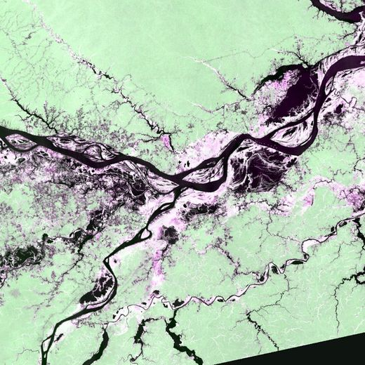
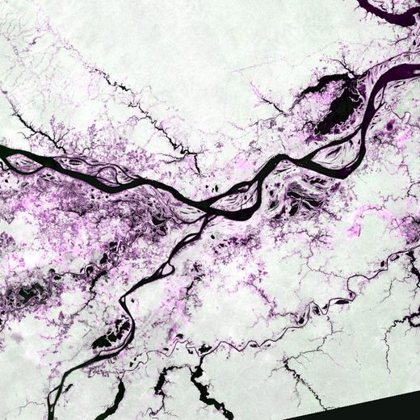

Serviços
- Nível do rio
- Fogo perto
- Mapa de satélite
- Denunciar
- Telefones e SMS
- Guias de cheia e fogo
- Cursos gratuitos
- Funai
- Benefícios
Outras estações
O rio visto pelo radar


No radar, o rio aberto fica escuro e a mata alagada fica clara. É assim que o site IARA acompanha a cheia em toda a Amazônia.
O que fazer
Boletins oficiais
O que fazer
Mais informação
O que aparece no mapa
- O lugar que você escolheu
- Focos de calor do INPE, nas últimas 24 ou 48 horas, como escolhido na tela Fogo
- Limite de terra indígena ou reserva
- Estação da ANA que mede o rio
A NASA publica a imagem de um dia na manhã seguinte, por isso a imagem da NASA é sempre de ontem.
O que está acontecendo?
Telefones e SMS
Minhas anotações
Onde denunciar
Guias
Ajustes
Sobre este app
Este é um app de apoio. A parte principal do projeto IARA é o site, que usa radar de satélite para acompanhar cheia, seca e fogo em toda a Amazônia, com mapas, imagens de radar e análises.
O app leva para o celular só o que quem mora na beira do rio precisa no dia a dia: o rio e o fogo perto de casa, onde denunciar e onde pedir ajuda. Site e app fazem parte do mesmo projeto. IARA quer dizer Imageamento de Áreas Ribeirinhas Alagadas e nasceu no NASA Space Apps Challenge 2026.
Toda vez que o app abre, ele busca a altura do rio na telemetria da ANA e os focos de calor do dia no INPE. Por isso precisa de internet. Os limites das terras indígenas e das reservas vêm da Funai e do ICMBio.